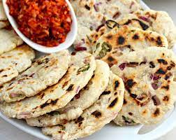

Coconut Roti

Description
This is the only recipe you need for the best Sri Lankan coconut roti/flatbread. It's so easy to prepare and I have also included the freezing options, serving suggestions, and really good tips to get the flavors right. Go check it out!
Ingredients
- 21/2 cups fresh grated coconut
- 21/2 cups all purpose flour
- 1.5 tablespoon butter
- 2 tablespoons thinly sliced shallot/onion
- 1 green chili (optional)
- 1 sprig curry leaves (thinly sliced)
- water as needed (room temp)
- salt as needed
Steps
- Put the shredded coconut into a large bowl. Add softened butter, thinly sliced onion/shallot, green chili, sliced curry leaves, and salt. crush and mix well with your hands. Taste. It should taste a little salty. If not add a bit more salt and mix again. ( The basic coconut roti only needs coconut, flour, water, and salt. You can skip all the other ingredients or use some but they add really good flavors)
- Add flour to the mix and carefully mix the flour with coconut mixture to coat all the coconut with flour. You can just run your fingers in a circular motion to mix them. no need to knead.
- Then add water, a little by little and gently mix with your fingers to make big lumps.
- When you enough water to foam some big lumps them knead the dough for about two minutes. No need to be vigorous like you make other bread varieties. You only need to make a pliable, nonsticky dough. It doesn't have to be smooth.
- Now divide the dough into 6 equal balls. If you want smaller Rotis divide the dough to 8 balls.
- Using your two hands, make them into a round ball. One at a time. With this amount, you can make 6 balls. Keep them covered until you make them. (see the description for storing/freezing options)
- Now, on a clean flat surface, apply some coconut oil. You can a flat plate, a tray, a banana leaf, or even your clean countertop. Put one ball in, flat it out until you get about 3/4cm to 1cm thickness. Don't make it too thin, the Rotis would dry out and turn into a biscuity texture. If you roll them thick, then you might end up with a raw middle.
- Heat a roti pan, or a cast-iron skillet (these are the best options but any other pan would also work). Lay a roti and cook about a minute or until you get nice char marks.
- Sri Lankan coconut rotiThen flip and cook again until it's cooked all the way through. When it's done transfer into a cooling rack. While one roti is cooking you can flat out the next roti.